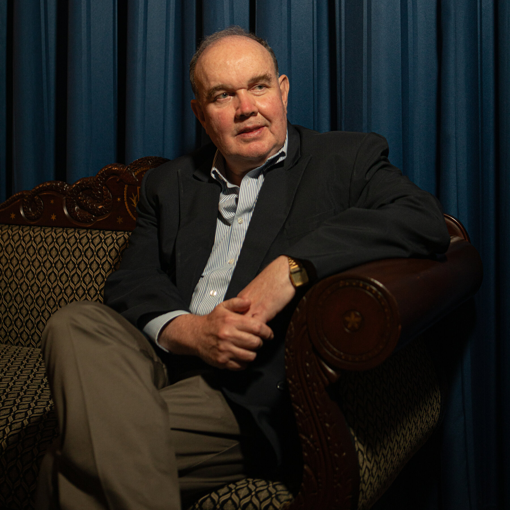

Keiko Fujimori Higuchi
Keiko Fujimori, lideresa de Fuerza Popular, ha pasado a la segunda vuelta de las Elecciones Generales de Perú 2026. Su plan de gobierno "Perú con Orden" se centra en seguridad, economía y lucha anticorrupción, con propuestas como un "Shock Anticorrupción Digital" y fortalecimiento policial con tecnología predictiva.
Perfil Actual
- Nacimiento: 25 de mayo de 1975, Lima
- Profesión: Administradora de empresas
- política: Tres veces candidata presidencial (2011, 2016, 2021), actual candidata en 2026.
Roberto Sánchez Palomino

Roberto Sánchez Palomino , candidato presidencial por Juntos por el Perú en las Elecciones 2026, se ha convertido en la gran sorpresa al ubicarse en el segundo lugar con 12% de votos válidos, desplazando a Rafael López Aliaga y asegurando su pase a la segunda vuelta contra Keiko Fujimori.
Perfil Actual
- Nombre completo: Roberto Helbert Sánchez Palomino
- Nacimiento: 1969, Lima
- Profesión: Psicólogo y político
- Trayectoria: Exministro de Comercio Exterior y Turismo (2021–2022), congresista y dirigente de Juntos por el Perú.
Rafael López Aliaga

Rafael López Aliaga, exalcalde de Lima y líder de Renovación Popular, es actualmente candidato presidencial en las Elecciones Generales de Perú 2026. Su campaña se centra en propuestas conservadoras, lucha contra la corrupción y seguridad ciudadana, mientras enfrenta críticas por su estilo confrontacional y su exigencia de nulidad de procesos electorales.
Perfil Actual
- Nombre completo: Rafael López Aliaga Cazorla
- Nacimiento: 11 de febrero de 1961, Lima
- Profesión: Ingeniero industrial y empresario
- Trayectoria política: Exalcalde de Lima (2023–2026), líder del partido Renovación